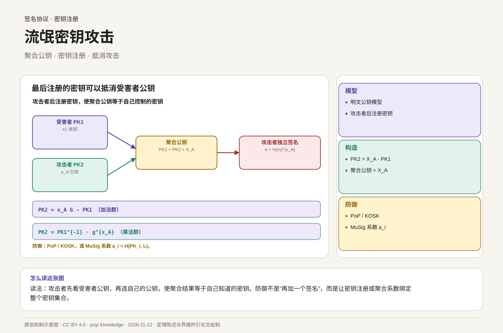
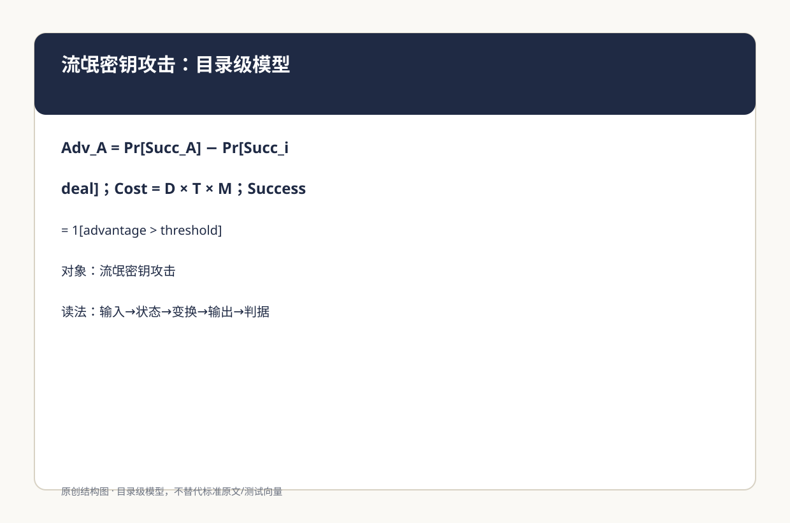

原理与机制
攻击：流氓密钥攻击（Rogue Key Attack）。### 聚合公钥的简单相加
许多多签名或聚合签名方案把签名者的公钥简单组合：
PK = PK_1 + PK_2 + … + PK_n（加法群），
或 PK = PK_1 · PK_2 · … · PK_n（BLS 的乘法群）。验证者只检查聚合签名 σ 是否对聚合公钥 PK 成立。若密钥注册不要求证明持有私钥，最后加入的攻击者可以“挑选”自己的公钥，使聚合公钥恰好等于它控制的某个密钥。### 两方情形的最简构造
设受害者公钥为 PK_1 = x_1 G（加法群）或 g^{x_1}（乘法群），攻击者想让自己控制 x_A。在乘法群中，它注册
PK_2 = PK_1^{-1} · g^{x_A}，
于是 PK_1 · PK_2 = g^{x_A}。攻击者知道 x_A，可以独立生成对任意消息的聚合签名 σ = H(m)^{x_A}；验证者按聚合公钥检查，看到的是“两个人都签了”，但受害者从未参与。加法群把乘法写成减法：
PK_2 = x_A G - PK_1，PK_1 + PK_2 = x_A G。### 攻击发生在密钥注册，不是签名算法内部
这不是对 BLS 或 Schnorr 单个签名的伪造，而是多签名协议在“明文公钥模型”下的密钥建立缺陷。攻击者必须能在看到受害者公钥后注册自己的公钥；若密钥集合在攻击前已固定，或注册要求证明持有私钥，攻击条件就改变。

为什么重要
多签名的卖点是“聚合后像一个普通公钥/签名”，这把密钥注册变成了安全边界。只要聚合函数对每个公钥一视同仁，攻击者就能用自己选的密钥抵消或替换别人的贡献。历史上多个早期多签名方案被此类攻击打破，Bellare-Neven 2006 因此把“明文公钥模型”作为正式模型：签名者只需有公钥，不需要在注册时证明持有私钥；但方案本身必须在该模型下可证明安全。### 两种常见防御
1.持有证明（proof of possession）：注册时要求对自身公钥签一条挑战消息，证明知道私钥。它把“任意选键”改成“必须知道对应私钥”，但不是所有实现都足够；Bellare-Neven 指出，某些 KOSK 模型要求的“证明”比 PKCS#10 自签名更强。2.密钥聚合系数：MuSig 令 a_i = H(PK_i, L)，聚合公钥为 Σ a_i PK_i。系数依赖整个公钥列表，攻击者不能再简单地用 PK_2 抵消 PK_1；但系数设计本身需要安全证明，不能随手加一个哈希就宣称安全。### 不是所有多签名都要 PoP
Bellare-Neven 的 MS-BN 在明文公钥模型下可证明安全，说明“必须 PoP”不是普遍定理。正确的结论是：简单的无系数聚合加无 PoP 的密钥注册会中招；具体方案要看其安全证明。
应用与实例
1.列出所有签名者公钥，确认聚合函数是简单求和/乘积还是带系数。2.检查密钥注册是否要求持有证明；证明是否绑定身份、公钥和协议上下文。3.尝试注册一个由受害者公钥计算出的对抗公钥，验证聚合公钥是否等于攻击者控制的密钥。4.检查签名验证是否只针对聚合公钥，是否还要求每个签名者的部分签名。5.对 BLS 聚合，确认是否使用 proof of possession 或带系数的聚合；对 Schnorr 多签名，确认是否使用 MuSig 类系数。### 工程场景
交易所多签、跨链桥、验证者聚合签名、钱包多签都涉及密钥聚合。把“多签”当成“多个单签的简单拼接”最容易忽略密钥注册；审计时应把密钥注册当作独立攻击面。

边界与攻击面
1.攻击者不能在受害者公钥之后注册自己的公钥；密钥集合预先固定或注册顺序受控。2.注册要求真正的持有证明，且证明不可被重放或转移。3.聚合函数使用与整个密钥列表绑定的系数，简单抵消不再成立。4.方案在明文公钥模型下有安全证明；不能仅凭“用了 BLS”判断安全。5.验证要求所有部分签名，且聚合公钥不能由单个密钥替代。6.攻击者不知道 x_A，或无法让聚合公钥等于已知密钥；构造失败。“流氓密钥攻击等于 BLS 被攻破”不成立；它攻破的是密钥聚合或注册方式。“加了 PoP 就万事大吉”也不成立；PoP 的实现、绑定和模型都必须正确。
历史与背景
早期多签名文献中反复出现密钥建立攻击；Bellare 与 Neven 在 CCS 2006 的论文中把“明文公钥模型”形式化，并给出在该模型下可证明安全的 MS-BN 方案。论文明确指出，流氓密钥攻击是真实威胁，而不是理论玩具。### MuSig 与聚合签名
2018 年 Maxwell、Poelstra、Seurin 与 Wuille 提出 MuSig，用密钥聚合系数在明文公钥模型下构造可证明安全的 Schnorr 多签名，并把多签名用于 Bitcoin。此后“简单聚合加无 PoP”被视为高风险配置，密钥注册与系数设计成为多签名方案的标准审查项。
逐步示例与核验
形式模型与复算步骤
[\mathrm{Adv}^{\mathrm{attack}}_A(\lambda)=\Pr[\mathrm{Game}_A(\lambda)=1]-\frac12]
流氓密钥攻击的公开参数、密钥/随机数与消息；变量说明：λ 安全参数；Game 把攻击目标写成挑战-响应游戏。1.定义挑战与获胜条件。2.给攻击者 oracle 访问。3.计算优势并与目标界比较。边界：公式只覆盖已登记的参数与假设；参数取值、标准版本和实现细节仍以来源为准。
参考出处
- Wikipedia search entry for 流氓密钥攻击. https://zh.wikipedia.org/w/index.php?search=%E6%B5%81%E6%B0%93%E5%AF%86%E9%92%A5%E6%94%BB%E5%87%BB
- Handbook of Applied Cryptography (Menezes, van Oorschot, Vanstone). https://www.cacr.math.uwaterloo.ca/hac/